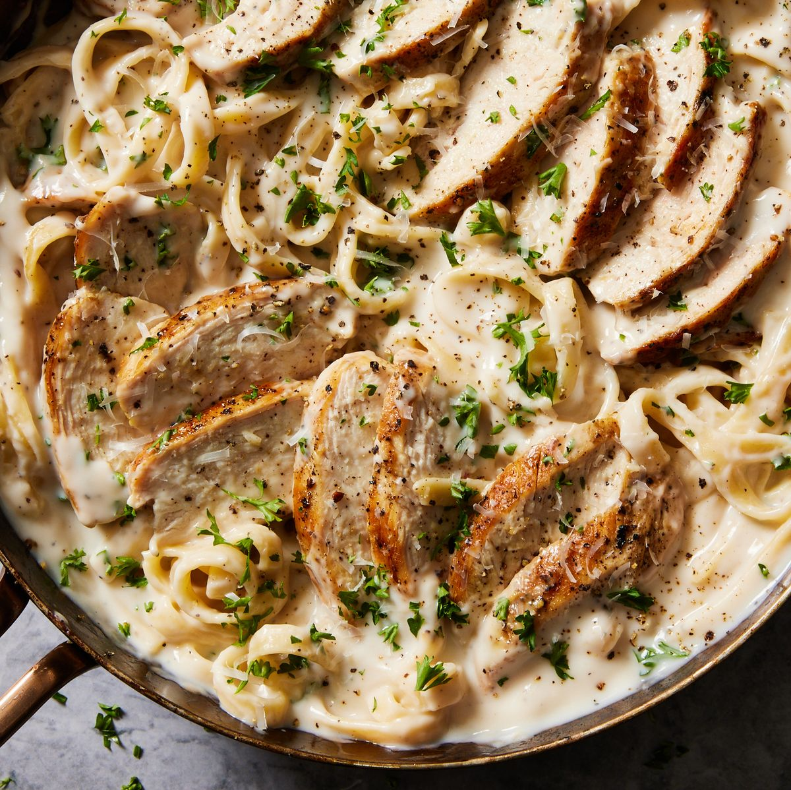

Chicken Alfredo

This dish is my favorite as it's still super easy to make, may take slightly longer but is a big change in flavor if you like pasta and need something different. At it's simplest, Chicken Alfredo is a pasta dish made with a white alfredo sauce and chicken of course. You can also add other things as well to spice it up, such as garnishes, brocoli, and my favorite peas. To make this easy and friendly for everyone I've only listed steps to cook it plain as a lot of people dislike "greens" in their food.
Ingredients
- Pasta Noodles
- Alfredo Sauce
- Chicken Breast
Steps
- Boil water in large pot and add noodles. Let cook approx 12 minutes
- Add drizzle of oil to pan. Cook chicken breast on medium-high heat for 5 minutes on each side (or internal temperature is 165°F).
- Place chicken on cutting board and let cool. Strain pasta and return to pot(add a app44444466666444444466666666444444444444446rox 1 cup of alfredo sauce to noodles to prevent from sticking).
- Once chicken is cool enough to touch. Cut breasts into strips and add to pot
- Add sauce and let simmer for 5 minutes
- Turn off stove and the Chicken Alfredo is ready to serve.